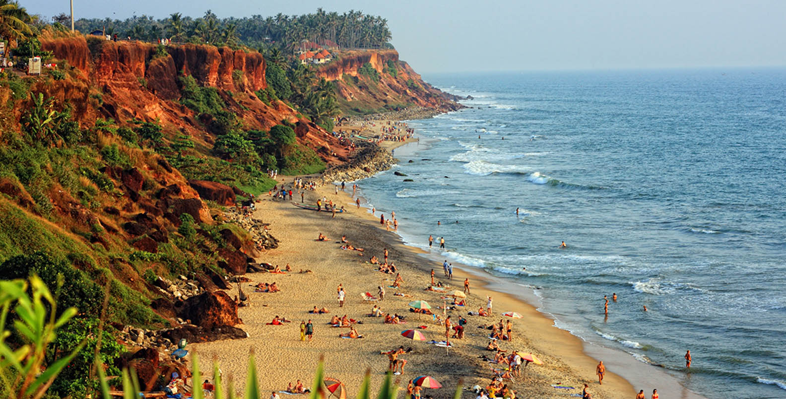

Varkala Beach, also known as PapanasHam Beach is a beach situated in Varkala Town of Varkala Municipality in Thiruvananthapuram district, Kerala, India. The beach skirts the Arabian Sea, part of the Indian Ocean.

ABOUT US
Varkala beach is the only place in southern Kerala where cliffs are found adjacent to the Arabian Sea. These cliffs are of tertiary sedimentary formation and named by geologists as Varkala Formation. They are a geological monument as recorded by the Geological Survey of India. Water spouts and spas occur on the sides of these cliffs.
BUSSINESS
This place gives you the freedom feel and you just on Chill and vibe.The Perfect Tournist place in Kerala side and Southern India
Learn more about what we offer!
CONTACT
Contact us at varkalaindia.com |
mobile no:9089455745
Â